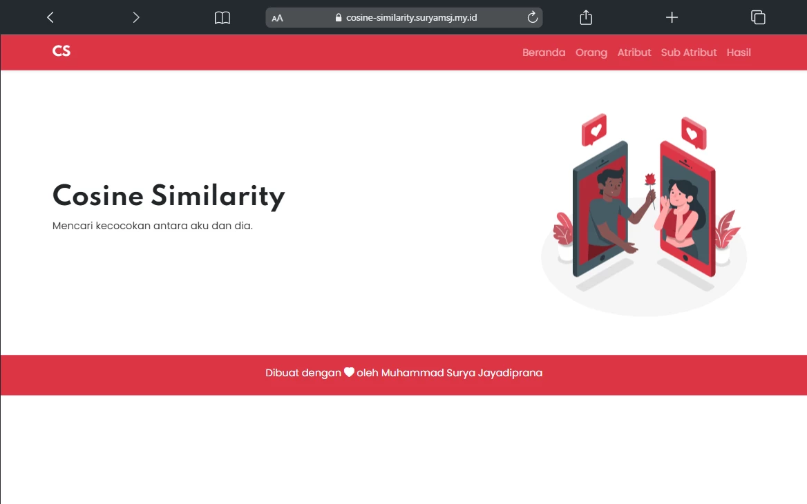
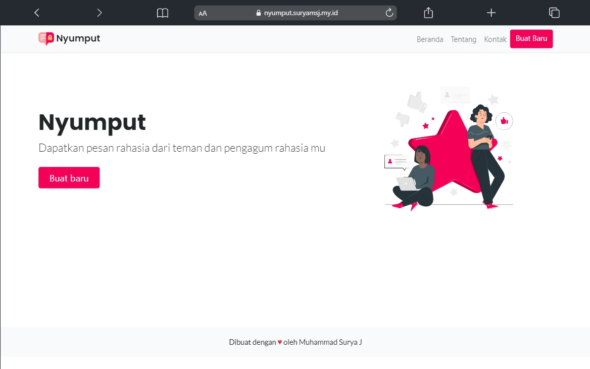
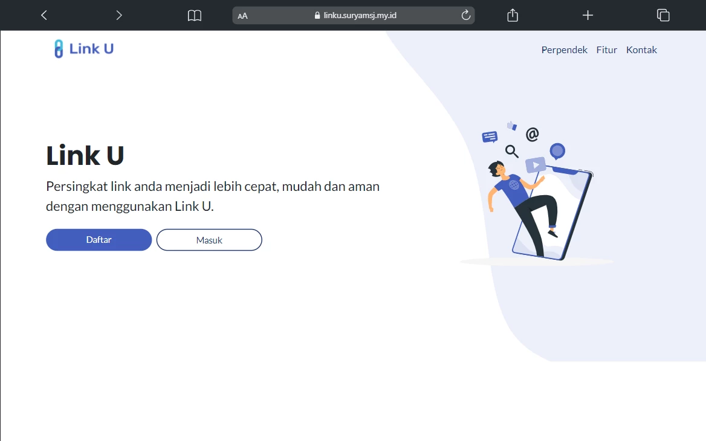

PROJECTS
Beberapa project yang saya buat ketika sedang mempelajari sesuatu yang baru.


Cosine Similarity
Cosine Similarity adalah metode untuk mengukur kemiripan antara dua dokumen atau teks.
Selengkapnya →


Kirim beberapa baris pesan anda ke halo@suryamsj.my.id dan saya akan segera menghubungi anda kembali.